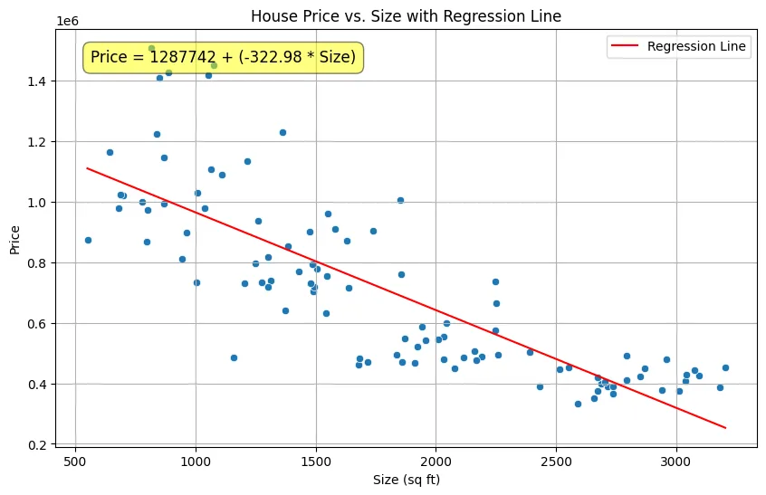
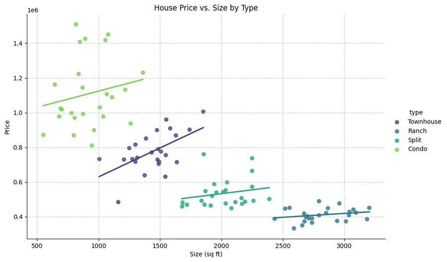

Back to all analyses
House price modelling
I tested how house size and property type relate to price.
- Python
- pandas
- statsmodels
- seaborn
Key results
0.927R² of the final log-log model, up from 0.657 with size alone
-$323 to +$156price change per sq ft, before and after controlling for house type
32 to 1.3variance inflation of the pollution measures, after combining PM2.5 and NO2
0.0008 to 0.42Breusch-Pagan p-value, linear model versus log-log model
Findings & method
What I found
- Size alone gave the wrong sign. Price appeared to fall by $323 for every extra square foot, because condos are small and expensive while ranches are large and cheap. With house type in the model, size adds $156 per square foot (p = 0.013).
- PM2.5 and NO2 carried the same signal. Both had variance inflation factors near 32 and neither was significant (p = 0.25 and 0.46). I combined them into one pollution index, the average of their z-scores, which was significant (p = 0.040) with a factor of 1.28.
- The linear model broke an assumption. A Breusch-Pagan test showed non-constant error variance (p = 0.0008). Switching to a log-log model fixed it (p = 0.42). The residuals are still not perfectly normal (Jarque-Bera p = 0.0125).
- In the log-log model, a 1% larger house is about 0.35% more expensive, 1% farther away is 0.14% cheaper, and 1% more pollution is 0.18% cheaper. Compared with condos, ranches are about 65% cheaper, split-levels 52%, and townhouses 31%, holding the rest equal.
- One concrete prediction: a 1,600 sq ft townhouse comes out at $800,642 in the linear model with type, with a 95% confidence interval for the mean of $748,844 to $852,440.
Try the final model
An estimate from the log-log model. Stay inside the data’s range for sensible answers.
Estimated price
How the fit improved
The last model predicts log price, so its R² is not strictly comparable with the others.


model_log_log = smf.ols(formula_log_log, data=houses)
results_log_log = model_log_log.fit()
bp_test_log_log = het_breuschpagan(results_log_log.resid, X_log_log)Limits: 100 houses, and the residuals still depart from normality, so the intervals should be read with care. Type and size remain correlated (variance inflation 10 to 17 in the log-log model).